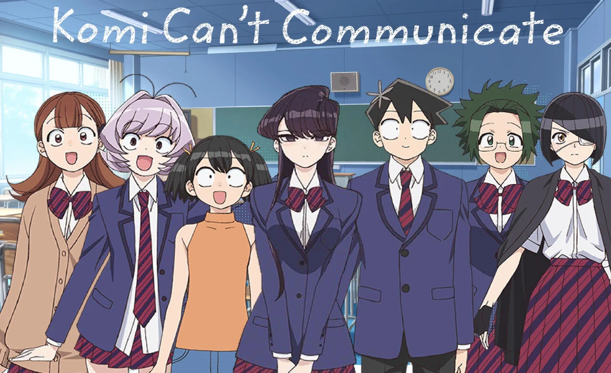
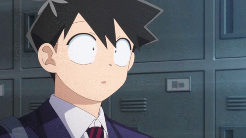
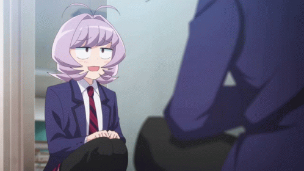
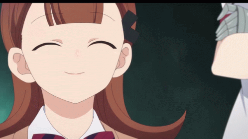
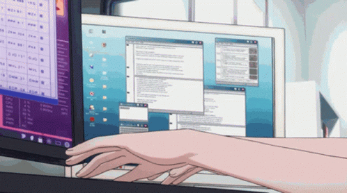

KOMI CAN'T COMMUNICATE

˚₊· ͟͟͞͞➳❥ An absolute beauty to anyone, Shouko Komi in reality suffers from extreme social anxiety and communication problems, making her largely unable to talk to others. However, her attractiveness and stoic appearance, which in itself results from her anxiety, is perceived as refined class, making her highly popular while preventing people from actually getting to know her. Komi's first conversation with Tadano is over a blackboard, and she uses a notebook to convey her feelings through writing. Despite this, she is still capable of verbal conversation over a cell phone. Her dream is to overcome her communication problems and make 100 friends.˚₊· ͟͟͞͞➳❥

*:･ﾟ✧*:･ﾟ✧Komi Shouko *:･ﾟ✧*:･ﾟ✧
➴Though Shouko is regarded as the Madonna of her school, she is incapable of socializing with others to such a level that it can be called a communication disorder. She is unable to utter a word or sound in her daily life due to her crippling anxiety and fear of rejection by her peers. However, she dreams of overcoming this adversity and desires to build friendly relationships with others and make 100 friends. The first person in her school to realize she had an inability to communicate well was her fellow classmate Tadano Hitohito. Tadano decided to help her overcome her anxiety and make her dream of 100 friends a reality. He became her first friend and with his help, Shouko now attempts to socialize with and befriend the other students of her class.
Shouko hardly talks with people. If she is forced to speak, she trembles like a vibrating phone. She usually carries a notebook and writing utensils to communicate with her friends. However, when she forgets them, she freezes up.

‧̍̊˙˚˙ᵕ꒳ᵕ˙˚˙Tadano Hitohito‧̍̊˙˚˙ᵕ꒳ᵕ˙˚˙
➴Hitohito suffered from a chuunibyou phase in his second year of middle school. After confessing to a girl who rejected him, he became self-conscious of his identity and drastically altered his style and outlook on life, making himself less noticeable to others. Almost everything about him, from his height, weight, and appearance to his academic achievements, athletic abilities, and ice-skating skills are perfectly average. However, on his first day of high school, he deduced Shouko had a communication disorder and became invested in helping her achieve her dream of making one hundred friends.
Despite his apparent lack of outstanding talents, Hitohito has been shown to be good at buying gifts.
His special skill is reading the atmosphere; a talent he uses to keep himself out of trouble. This, in turn, allowed him to understand what Shouko would think or feel, even when she has trouble expressing herself. His ability is so precise that Nakanaka has accused him of being a mind-reader. Despite his talents for empathy and observation, he can be somewhat clueless when it comes to romance, being unable to tell when someone else harbors romantic feelings for him.
Due to Hitohito’s seat originally being next to Shouko’s, many of his classmates initially held resentment and jealousy towards him. His friends and teachers are aware of his disposition, and often take advantage of him.

*+:｡.｡Najimi Osana｡.｡:+*
➴Najimi is known for having exceptional talent when it comes to communication. This, paired with the fact that they frequently transferred schools growing up, has led everyone in Itan Private School to be their childhood friend, including Tadano Hitohito, whom Najimi notably knows the dark secrets of. Najimi became the vice president of Class 1 because of its talent.
Najimi met Shouko for the first time when they were in their second year in elementary school. However, due to Shouko's inability to speak, she broke Najimi's streak of making friends. This caused Najimi to be bedridden for a week from shock.
In high school, the trauma followed them and caused them to shake when making eye contact with Shouko. Initially, Najimi rejected Hitohito's plea to befriend Shouko. However, after much begging, they reluctantly agreed. When walking home with Shouko and Hitohito, a former classmate confessed to Najimi and attempted to assault them when he was rejected. Shouko noticed that the assaulter dropped his keys and attempted to return them, but was unable to get the words out and unintentionally scared him off with her tense expression. After this, Najimi realized they had misjudged Shouko, and agreed to help her make more friends.
Najimi insists on using the feminine suffix -chan, but has been known to switch to being referred to as a boy when convenient: like when rejecting a male classmate that confessed.
Other characters often use both male and female pronouns when referring to Najimi due to nobody, even teachers, knows their birth gender.

*°:⋆ₓₒRen Yamai*°:⋆ₓₒ
➴Ren is a leader of the girl's group in Class-1 and, like the whole student body, a member of Shouko's entourage. She calls Shouko "Komi-sama" and secretly worships her to a greater degree, even than the rest of Itan High. Ren shows a violent and conniving true side of herself when someone she sees as unimportant grows close with Shouko, namely Hitohito. Despite her initial scheme against Hitohito and Shouko's rejection of her advances, as a result, Ren learned to tolerate Hitohito and managed to tone down her insanity enough to become one of Shouko's companions. Still, throughout the story, she has attempted various tactics to catch a glimpse of Komi's underwear or take a panty shot, touch her boobs or otherwise feel her up, be touched by her, etc.
As a second-year at Itan High, Ren is shown to have made friends with Manbagi Rumiko's friends, the gyarus, in her class.

↳ ❝ [] ¡! ❞Thank you ↳ ❝ [] ¡! ❞
✧*̥˚ click gifs for references *̥˚✧